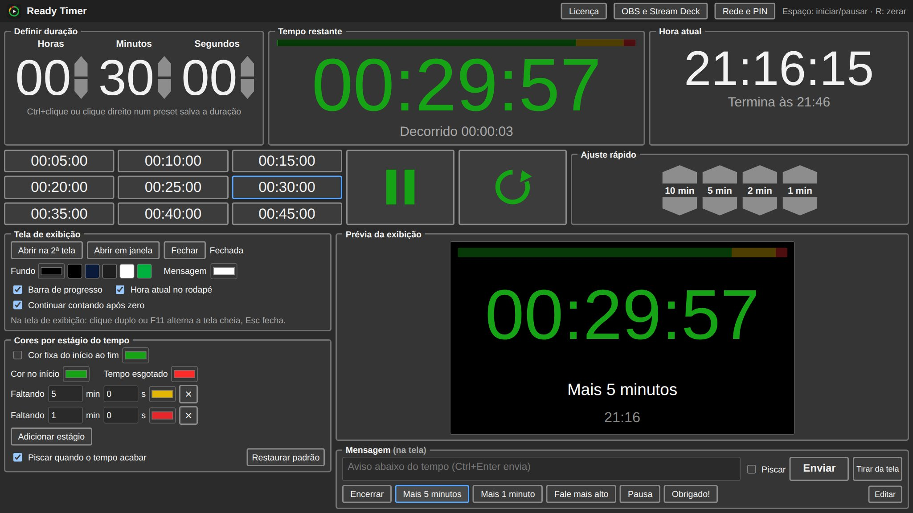
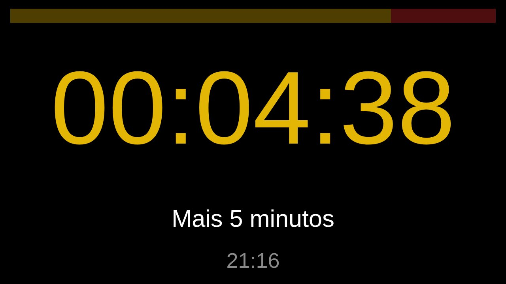

O tempo certo,
na tela certa.
Ready Timer é um timer de palco para Windows. Controle a contagem no seu computador ou pelo celular e mostre o tempo em tela cheia para quem está falando.

Feito para quem precisa do tempo sob controle
Palestras, cultos, aulas, eventos corporativos e transmissões ao vivo: o Ready Timer mantém quem está no palco e quem está na técnica falando a mesma língua.
Tela de exibição na 2ª tela
Um clique abre o tempo em tela cheia no projetor ou TV, com números grandes que nunca mudam de tamanho.
Cores por estágio
Verde no início, amarelo perto do fim e vermelho no final. Você escolhe as cores e os momentos, ou usa uma cor fixa.
Controle pelo celular
Qualquer celular, tablet ou notebook da mesma rede controla o timer pelo navegador, protegido por PIN.
Mensagens rápidas
Botões como "Encerrar" e "Mais 5 minutos" mandam avisos para a tela com um toque, com opção de piscar.
OBS, Stream Deck e Companion
Fundo transparente para transmissões e endereços prontos para controlar tudo por botões físicos.
Ajuste rápido e presets
Some ou tire 10, 5, 2 e 1 minuto com o timer rodando, e guarde as durações que você mais usa.
Quem está no palco vê só o que importa
A tela de exibição mostra o tempo grande e legível, com uma barra de progresso, a hora atual e uma faixa reservada para mensagens. Nada muda de lugar durante a contagem.
- Fundo à sua escolha, inclusive verde para chroma key
- Pisca quando o tempo acaba e pode continuar contando o tempo excedido
- Abre em qualquer aparelho da rede, inclusive numa TV com navegador

Comece grátis. Libere tudo por R$ 20.
Sem assinatura: você paga uma vez e usa para sempre.
Gratuita
- Todos os recursos do programa
- Controle pelo celular, OBS e Stream Deck
- Timers de no máximo 20 minutos
Completa
- Timers sem limite de duração
- Ativação em até 2 computadores
- Atualizações da versão 1.x incluídas
- Reembolso em até 7 dias
O pagamento é processado pela Dodo Payments, que envia a chave de licença por e-mail logo após a compra.
Dúvidas frequentes
Como funciona a versão gratuita?
É o programa completo, com uma única limitação: a duração máxima do timer é de 20 minutos. Ao ativar a licença, o limite desaparece, sem precisar reinstalar.
Preciso de internet?
Só para ativar a licença. Depois disso o Ready Timer funciona sem internet e confere a licença sozinho quando há conexão. Ele pode ficar até 30 dias sem internet; passado esse prazo, basta conectar uma vez para confirmar.
Em quantos computadores posso usar?
Cada licença ativa até 2 computadores. Para trocar de computador, use "Remover deste computador" no programa e ative no novo.
Os celulares precisam instalar alguma coisa?
Não. Qualquer celular, tablet ou notebook na mesma rede abre o painel pelo navegador, lendo o QR code que aparece no programa. O controle pode ser protegido por PIN.
O Windows mostrou um aviso ao instalar. É seguro?
Sim. O aviso "O Windows protegeu o computador" aparece com programas novos que ainda não têm assinatura digital paga. Clique em "Mais informações" e depois em "Executar assim mesmo".
E se eu me arrepender da compra?
Você tem 7 dias para pedir o reembolso integral, sem precisar explicar o motivo. Veja a política de reembolso.
Preciso de ajuda. Como falo com vocês?
Escreva para samuel.wmello@gmail.com. Respondemos em até 2 dias úteis.